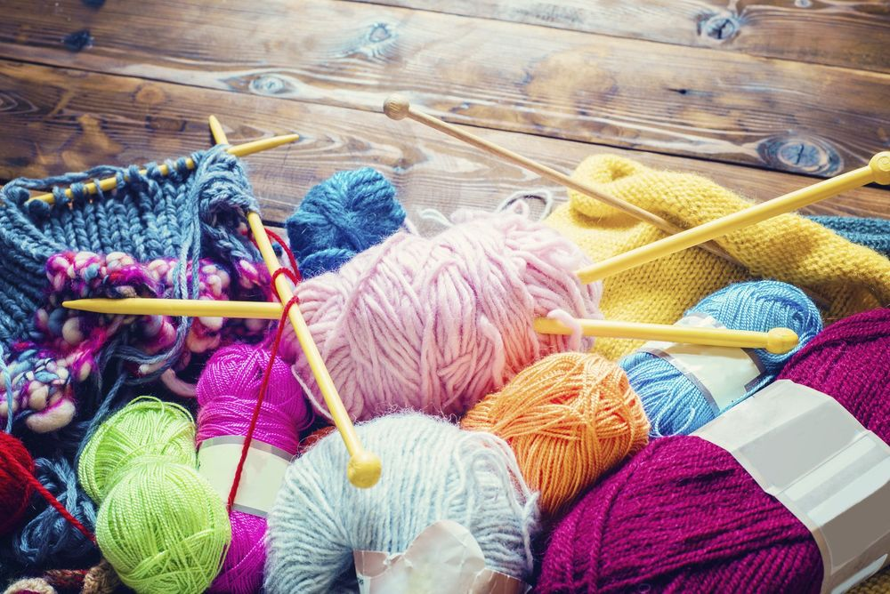

I'll bring you up to speed.There are different types of knitting depending on the tool, product, yarn, etc.Сhoose what you want and let's go!
Sweaters Socks Toys Dresses Tops Also by clicking on each option you will find a detailed scheme for work.
Acrylic Cotton Wool Knitted yarn(Click here to find out more) 
CandyYarn Golka Prostopryaja I hope this information was useful! Good luck with your work!